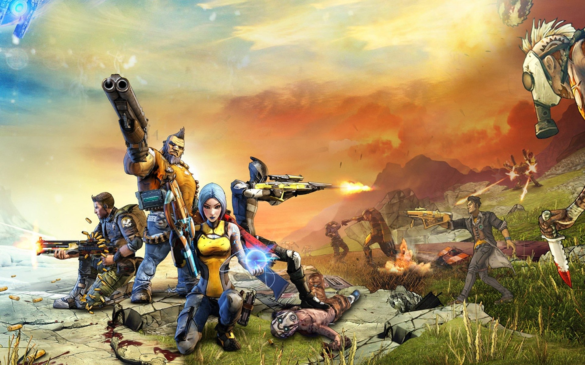

There are 4 playable characters that come with the vanilla game and 2 more that come with the DLC content. Each character has three unique skill trees and abilities to choose from. As you build your skill tree you'll get boosts to your powers and extra abilites as well.
Axton is the playable commando class character. He is able to deploy a Dahl sabre turret, a mounted gun with 360° rotation that can be upgraded with many weapons and abilities. He has 3 skill trees.
Maya is the playable siren class. She has a phaselock ability that suspends her enemies in a different dimension. It can be upgraded to provide various damaging effects. Her three skill trees include.
Salvador is the Gunzereker class character in Borderlands 2. His main skill is Gunzerking, which allows his to dual weild any 2 weapons in the game for a limited time. His three skill trees are.
Zero is the playable assasin in Borderlands 2. His main skill is deception. It grant Zer0 the ability to deploy a holographis decoy of himself and go into a invisible stealth mode. He deals amplified damage on his next attack. His three skill threes are.